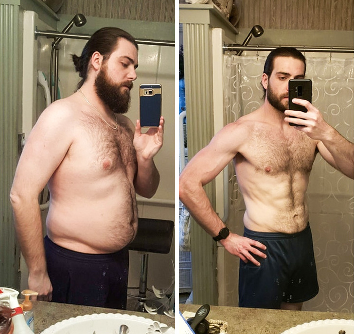
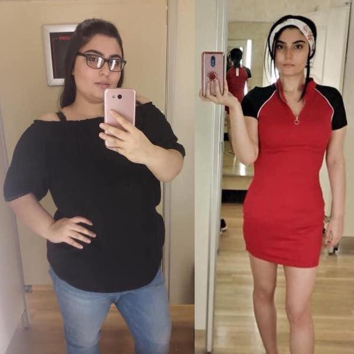
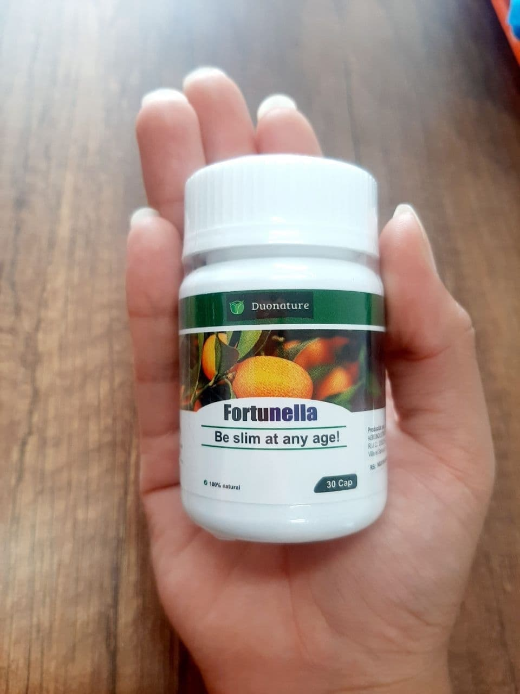

Эндокринолог и диетолог доктор Марекс поделился секретом естественного похудения без вреда здоровью
60-ти летний доктор уже помог сотням пациентов вернуть нормальный вес и утраченное здоровье. Нашей редакции удалось взять интервью у доктора Маркеса и разузнать его удивительные секреты.
- Здравствуйте, доктор Маркес! Расскажите, насколько актуальна проблема похудения в наши дни.
- Недавние исследования показали, что за последние 40 лет число людей, страдающих ожирением, выросло больше, чем втрое. В свою очередь это приводит к существенному росту заболеваемости сердечно-сосудистыми заболеваниями и сахарным диабетом 2го типа. Не говоря уже про прочие проблемы со здоровьем. Каждый год все больше и больше людей мечтают сбросить вес, но не могут. Я могу смело сказать, что посвятил свою жизнь изучению способов борьбы с лишним весом и помощи людям.
- Почему так много людей стали страдать ожирением?
- Сложно ответить на этот вопрос. Гиподинамия (малоподвижный образ жизни) – одна из лидирующих причин. Мы проводим день сидя в офисе, в машине или транспорте, дома на диване или в кафе. Конечно, это не может не сказываться. Плюс к тому, у нас сейчас такое многообразие еды. Мы просто переедаем, мы больше не живем в голоде. Да и многие из продуктов сейчас генно-модифицированы, это тоже может влиять на наш обмен веществ. Поэтому мы имеем то, что имеем.
Стандарты красоты напротив диктуют нам быть стройными и подтянутыми. Женщины (особенно женщины) изнуряют себя диетами, чтобы быть стройными. По итогу мы имеем психические расстройства вроде анорексии. В общем, ситуация напряженная.
- Ну а если не переедать и много двигаться? Получится похудеть или не набрать лишний вес?
- Возможно, у вас получится не набрать лишний вес. Но здесь много «но». У вас, как и у многих людей сейчас может быть замедлен обмен веществ. А если он замедлен, то набор веса и сложности с похудением неизбежны. Во-вторых, у современного человека банально нет времени на постоянную физическую активность. Если вы не работаете в поле, конечно. Вы же не будете бегать по офису. В-третьих, ограничивая себя в еде вы рискуете заработать депрессию. И я сейчас не шучу.
- Выходит, что тренажерный зал и диеты бесполезны?
- Не совсем. Мы должны стараться двигаться настолько много, насколько это вообще возможно, учитывая наш образ жизни. Я говорю лишь о том, что в основном упражнений в зале недостаточно для потери веса. В зале ваши нагрузки слишком интенсивные и редкие. Вы не можете быть в движении весь день, понимаете, о чем я?
Что же касается диет, если вы переборщите с ними, вы не только заработаете депрессию или анорексию, но еще и введёте организм в режим стресса и заставите его накапливать жир еще эффективнее. Хотя, я, конечно, рекомендую своим пациентам умеренное питание богатое клетчаткой и овощами.
- Доктор, что же тогда делать тем, кто хочет похудеть? Я знаю, вы помогли многим своим пациентам. Таблетки?
- До недавнего времени я избегал каких бы то ни было лекарств для снижения веса. Они имели столько побочных эффектов и последствий, что говорить о здоровой худобе не приходилось. Никто не хочет сбросить вес ценой собственного здоровья. Мне очень хотелось видеть по-настоящему эффективное природное средство для ускорения метаболизма, но его просто не было.
Я прекрасно понимал, что ключ к потере веса – это ускорение метаболических процессов в теле. Они замедляются с возрастом или в результате эндокринных нарушений. Физическая активность хорошо ускоряет эти процессы, но мы уже выяснили, что обеспечить достаточную активность современный человек не в состоянии.
Недавно ученые открыли уникальные метаболические свойства такого фрукта как фортунелла. Эти плоды всегда считались очень полезными и продлевающими молодость. Их использовали для придания сил и заряда бодрости, но оказалось, что эти свойства обусловлены способностью плодов ускорять метаболизм на клеточном уровне. В результате происходит в прямом смысле омоложение организма и жировая ткань начинает просто исчезать. Самое лучшее – это то, что такое похудение не только не вредит организму, но и наоборот, омолаживает и оздоравливает весь организм в целом.
На основе плодов фортунеллы был создан натуральный препарат Фортунелла, в основе которого экстракт этих плодов. Дополнительные компоненты усиливают действие экстракта. Продукт полностью натуральный и не имеет противопоказаний. Помимо сброса веса, препарат улучшает качество кожи и волос за счёт улучшения кровообращения, дает прилив жизненных сил, улучшает цвет лица. Эти плоды содержат большое количество антиоксидантов, которые даже защищают от возникновения онкологических заболеваний. Недаром в древнем Китае фортунеллу называли золотым фруктом и часто упоминали о ней в литературе. Начиная с 12го века.
Я рекомендую этот препарат всем своим пациентам, в сочетании с нормальной здоровой диетой (это когда вы едите все, но сбалансировано и без излишеств) и хотя бы минимальной физической активностью.
Ко мне приходят десятки и сотни счастливых и довольных пациентов, они просто сияют. Надо видеть их радость от того, что они наконец-то получили тело своей мечты. Когда я вижу их лица и фигуру, я понимаю, что живу не зря.


- Кому стоит принимать препарат Фортунелла?
- Всем, кто хочет сбросить вес, будь то 2 кг или 20 кг. Клинически доказано, что средство может помочь сбросить до 11 кг в месяц. Это уникальный результат, с его эффективностью может соперничать только такая опасная операция как липосакция.
В ходе проведенных исследований на группе людей, страдающих ожирением, было выявлено что за 4 недели использования Фортунелла помогла
- сбросить до 11 кг – 88% испытуемых
- сбросить до 9 кг – 7% испытуемых
- сбросить до 6 кг – 5% испытуемых
Все участники испытаний вели обычный образ жизни с часовыми тренировками (бег, кардио) 2 раза в неделю. Никаких изнуряющих занятий спортом.
Также, среди эффектов от приема препарата было отмечено
- снижение аппетита – 87% испытуемых
- улучшение самочувствия – 95% испытуемых
- улучшение состояния кожи, волос, ногтей – 89% испытуемых
- отсутствие побочных эффектов – 100% испытуемых
- сохранение веса через 2 месяца после окончания приема – 98% испытуемых
Как мы видим, эффект от приема препарата не только значимый, но и долговременный, что является одним из ключевых критериев при снижении веса. Это тот подводный камень. С которым сталкиваются миллионы желающих похудеть. За счёт улучшения метаболизма вес не приходит обратно.
- Где можно приобрести данный препарат?
- С целью сохранения низкой цены, препарат не продается через аптечные сети. Его можно заказать напрямую на сайте производителя. Курьерская доставка занимает 1-3 дня. Препарат принесут прямо вам домой. Специально для моих пациентов и сегодня для ваших читателей компания предоставляет скидку 50% на первую баночку средства. Акция действует до 13.07.21 включительно! Количество товара ограничено.
- Спасибо, доктор Маркес за подробные ответы и за скидку для наших читателей.

Pedir Fortunella
en el sitio oficial
ой, да разве может фрукт сжигать 11 кг, не верю.
плоды фортунеллы содержат уникальные кислоты и вещества, позволяющие влиять на метаболизм. Они действуют намного эффективнее, чем если были бы выведены искусственным путем.

нужно всегда прислушиваться к тому, что люди знали в древности. Китайцы не даром так много внимания уделяли фортунелле. Они знали о ее целебных свойствах еще большем чем мы. Мы, наверное, только начинаем их открывать.
заказал баночку, спасибо доктору за скидку!
я принимала данное средство 2 месяца, скинула 18 кг, результатом очень довольна. Прошло 4 месяца, обратно вес не вернулся.

я так набрала после родов(( Скоро закончу кормить грудью и буду принимать Фортунеллу. Закажу сейчас сразу баночку, пока скидка такая хорошая.
Моя жена с помощью этого средства стала просто стройняшкой. Сбросила около 12 кг, принимала 6 недель. Сейчас ходит на фитнес, поддерживает форму. Люблю ее еще больше.
аааа девочки, у меня месяц до свадьбы, надо хотя бы 5 кг скинуть! Сделала заказ, надеюсь успею
а я пила эту Фортунеллу, но скинула всего 3 кг, недовольна.
Елена, а вы каждый день принимали препарат?
нет, пила, когда вспоминала
Любое, даже самое эффективное средство работает только тогда, когда вы его принимаете регулярно и по инструкции. Иначе какого результата вы ждете?
закажу жене, не скажу, что для похудания, скажу, что для общего здоровья. Пусть похудение будет приятным бонусом.

заказала баночку, пришло через 2 дня, упаковочка целая, все здорово.

о пользе фортунеллы знаю давно, но вот не видела препарата на ее основе. Здорово, что создали. Закажу баночку, хочу сбросить пару килограмм к отпуску и вообще организм в порядок привести.